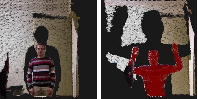

Spatial change detection on unorganized point cloud data¶
An octree is a tree-based data structure for organizing sparse 3-D data. In this tutorial we will learn how to use the octree implementation for detecting spatial changes between multiple unorganized point clouds which could vary in size, resolution, density and point ordering. By recursively comparing the tree structures of octrees, spatial changes represented by differences in voxel configuration can be identified. Additionally, we explain how to use the pcl octree “double buffering” technique allows us to efficiently process multiple point clouds over time.
The code:¶
First, create a file, let’s say, octree_change_detection.cpp and place the following inside it:
The explanation¶
Now, let’s discuss the code in detail.
We fist instantiate the OctreePointCloudChangeDetector class and define its voxel resolution.
Then we create a point cloud instance cloudA which is initialized with random point data. The generated point data is used to build an octree structure.
Point cloud cloudA is our reference point cloud and the octree structure describe its spatial distribution. The class OctreePointCloudChangeDetector inherits from class Octree2BufBase which enables to keep and manage two octrees in the memory at the same time. In addition, it implements a memory pool that reuses already allocated node objects and therefore reduces expensive memory allocation and deallocation operations when generating octrees of multiple point clouds. By calling “octree.switchBuffers()”, we reset the octree class while keeping the previous octree structure in memory.
Now we instantiate a second point cloud “cloudB” and fill it with random point data. This point cloud is used to build a new octree structure.
In order to retrieve points that are stored at voxels of the current octree structure (based on cloudB) which did not exist in the previous octree structure (based on cloudA), we can call the method “getPointIndicesFromNewVoxels” which return a vector of the result point indices.
Finally, we output the results to the std::cout stream.
Compiling and running the program¶
Add the following lines to your CMakeLists.txt file:
After you have made the executable, you can run it. Simply do:
$ ./octree_change_detection
You will see something similar to:
Output from getPointIndicesFromNewVoxels:
0# Index:11 Point:5.56047 56.5082 10.2807
1# Index:34 Point:1.27106 63.8973 14.5316
2# Index:102 Point:6.42197 60.7727 14.7087
3# Index:105 Point:5.64673 57.736 25.7479
4# Index:66 Point:22.8585 56.4647 63.9779
5# Index:53 Point:52.0745 14.9643 63.5844
Another example application: OpenNI change viewer¶
The pcl visualization component contains an openNI change detector example. It displays grabbed point clouds from the OpenNI interface and displays detected spatial changes in red.
Simply execute:
$ cd visualization/tools
$ ./openni_change_viewer
And you should see something like this:

Conclusion¶
This octree-based change detection enables to analyse “unorganized” point clouds for spatial changes.
Additional Details¶
“Unorganized” point clouds are characterized by non-existing point references between points from different point clouds due to varying size, resolution, density and/or point ordering. In case of “organized” point clouds often based on a single 2D depth/disparity images with fixed width and height, a differential analysis of the corresponding 2D depth data might be faster.